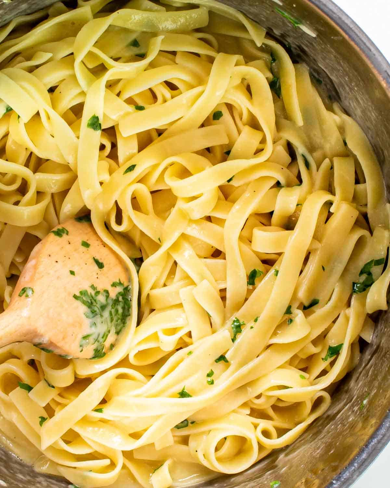

Buttered Noodles

Description
This recipe will teach you how to make this simple, tasty buttered noodles dish. So quick to make you'll be making it everday!
Continue reading below to discover how to make this noodle dish!
Ingredients
- Fettuccine Noodles
- Butter
- Parmesan
- Salt and Pepper
Steps
- Boil the fettuccine in lightly salted water until it's tender, yet still firm.
- Drain the pasta in a colander, then return it to the pot.
- Mix butter, cheese, salt, and pepper into the cooked noodles until all the ingredients are evenly combined.